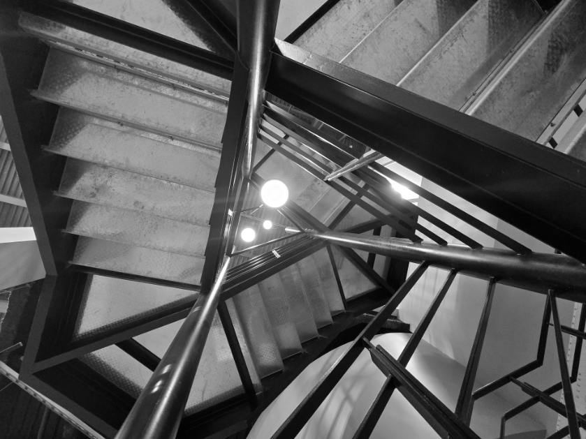
Photography
Photography Selection
A curated set of photographs exploring composition, light, and everyday spatial geometry.
Coursework from 2025: the photo series The Life of a Graphic Design Student, studies in challenging lighting, composition and studio photography, and a magazine cover.
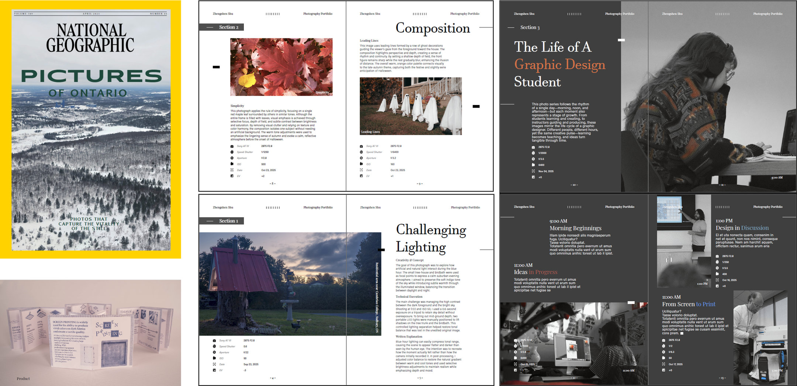
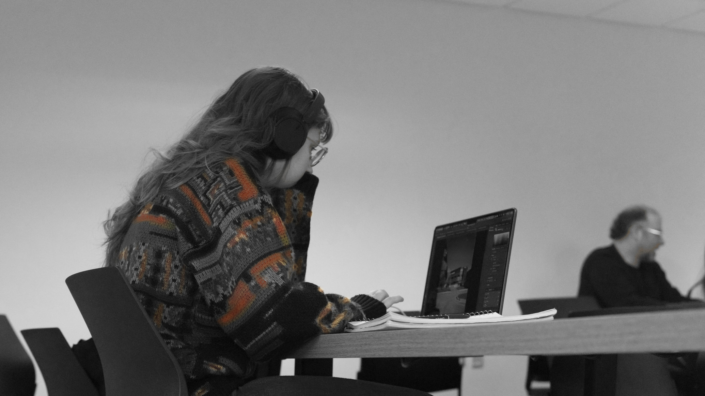
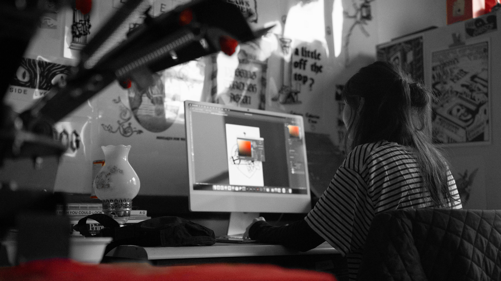
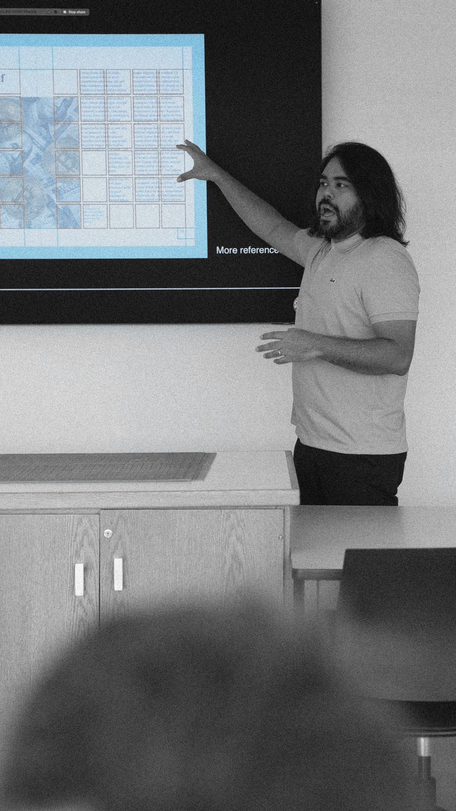
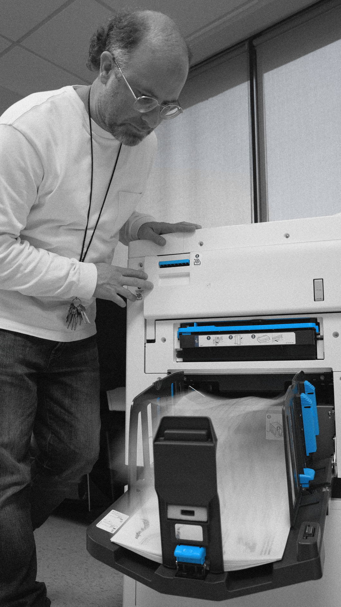
The Life of a Graphic Design Student
Shot between October 16 and November 4, 2025, this series follows the rhythm of a single day, from morning to afternoon. Each moment also stands for a stage of growth, from students learning and creating to instructors guiding and producing.
9:00 AM, Morning Beginnings. 11:00 AM, Ideas in Progress. 1:00 PM, Design in Discussion. 3:00 PM, From Screen to Print.
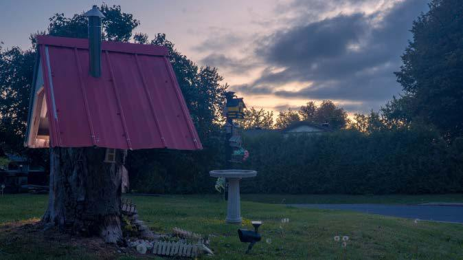
Lighting
A blue-hour study of a small tree house and a birdbath in a residential area near Cambrian College, Sudbury, taken on September 23, 2025, at 7:21 p.m.
The aim was to keep the soft indigo of the sky while the lit window adds some warmth. A 0.6-second exposure at f/22 and ISO 50, on a tripod, kept detail in the sky, and two portable LED lights lifted the shadows on the trunk and the birdbath. In editing, colour balance brought back the gradient between warm and cool tones.
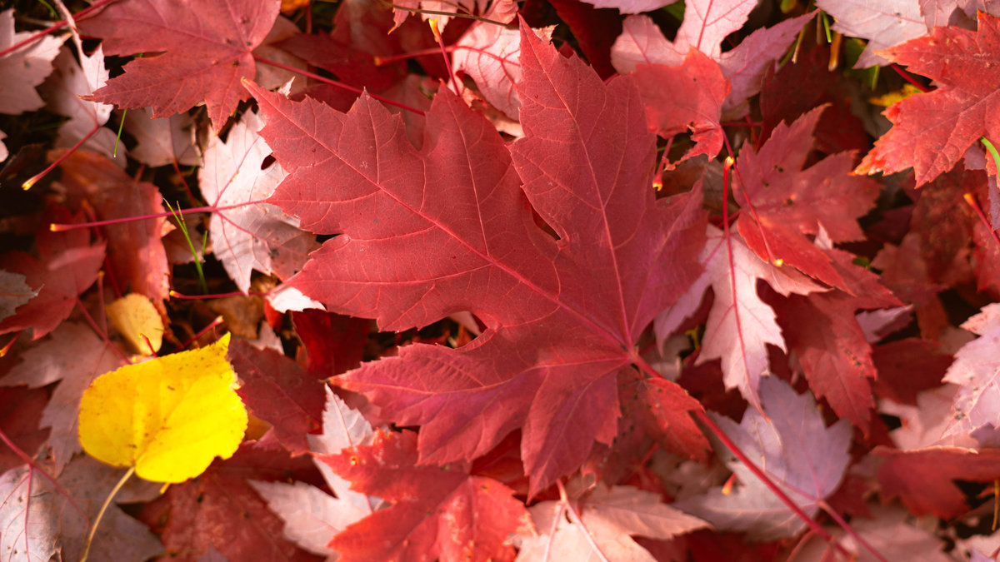
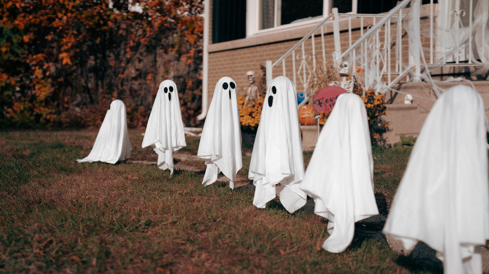
Composition
Two studies from October 23, 2025. In the first, selective focus and depth of field pick one red maple leaf out of a frame full of leaves, with no artificial background. In the second, a row of ghost decorations forms leading lines from the foreground toward the house, with a shallow depth of field.
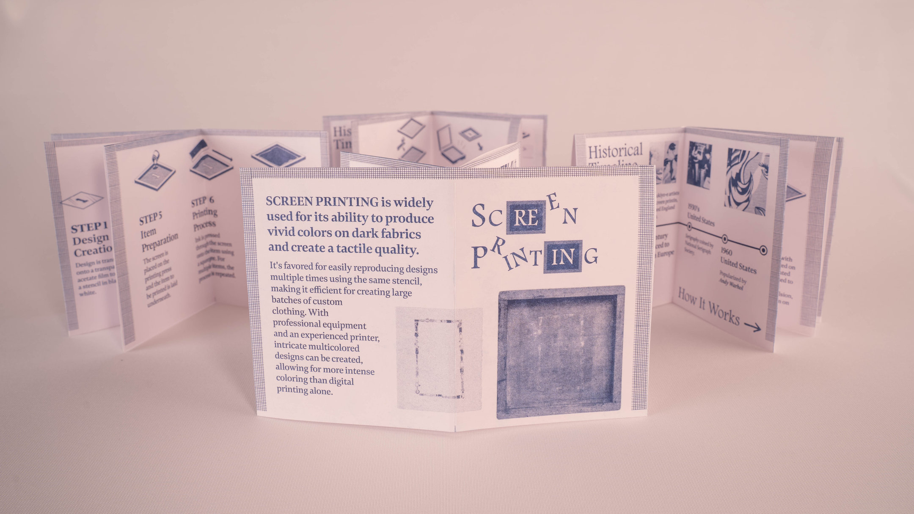
Studio
A product shot of my Riso-printed zine on screen printing, on a white cloth base under warm strobe light. Four lights were set up: a key light on the right, a fill on the left with a reflector at its base, one overhead and an angled highlight from the front right, balanced to the ivory tone of the paper.
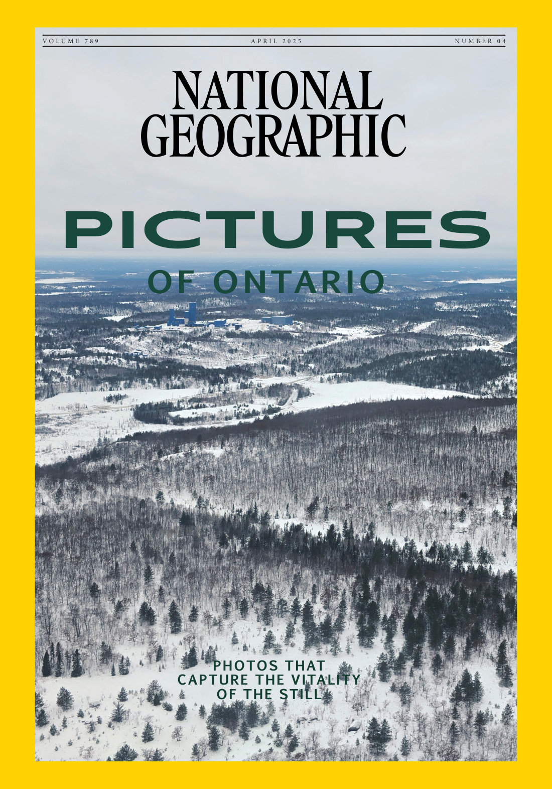
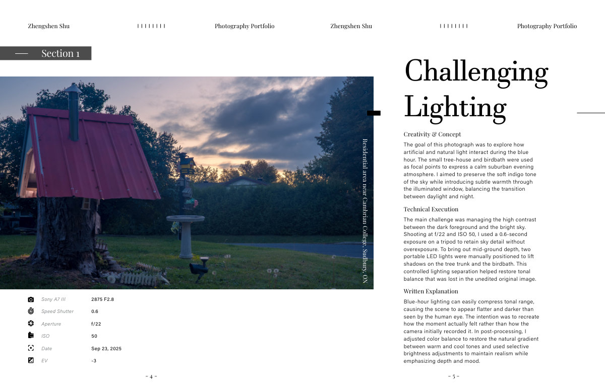
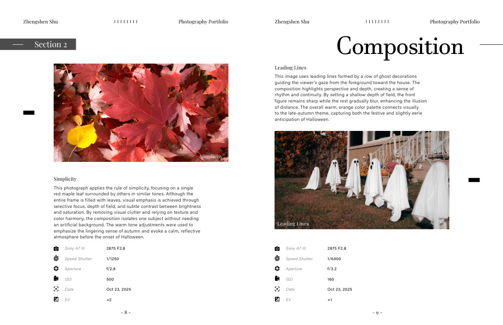
Editorial
A magazine cover in the style of National Geographic, “Pictures of Ontario”, made as a course exercise for AFP1135, a digital photography course, in April 2025.
Beside it, two spreads from the photography portfolio that holds the studies above: Challenging Lighting and Composition.
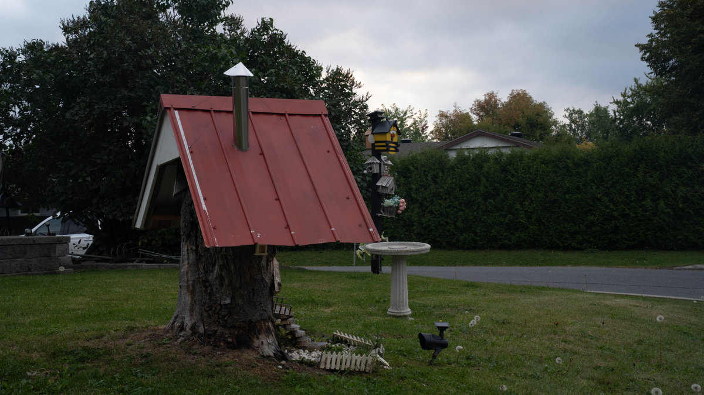
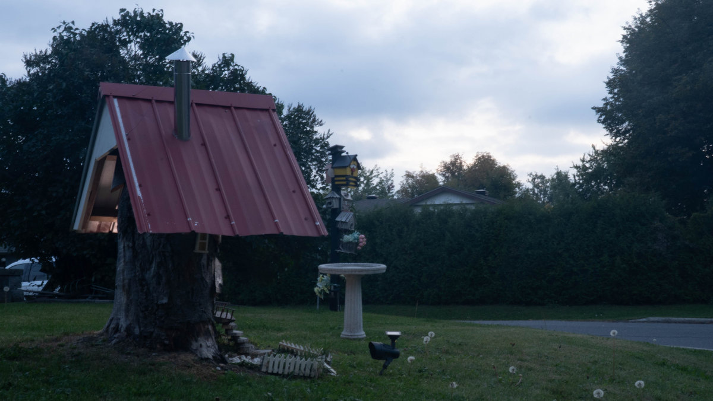
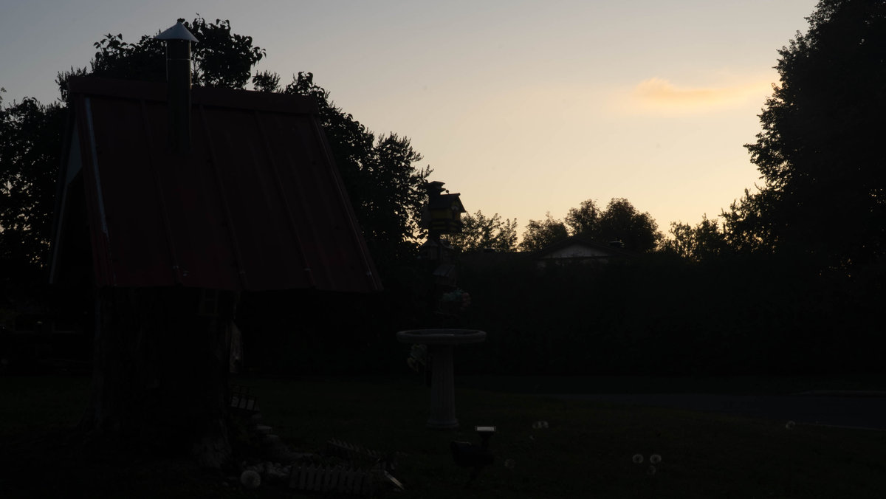
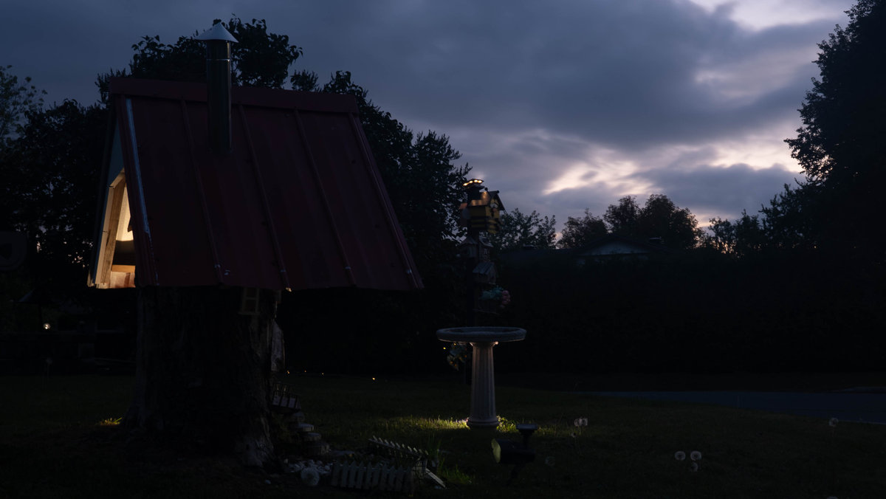
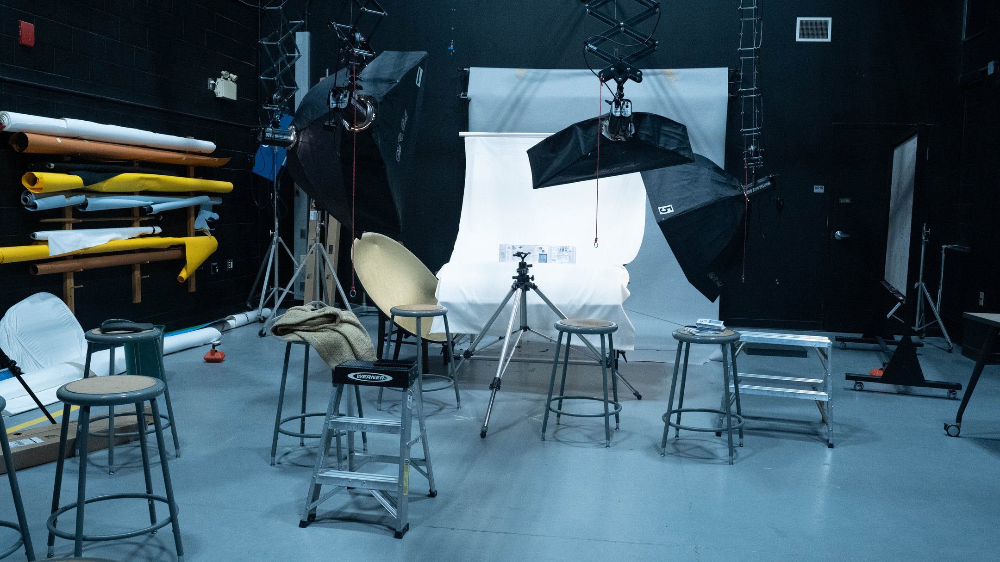
Process
The tree house was photographed over several evenings. These frames come from two of them, September 22 and 23, 2025, taken in the same window around sunset.
The last photo shows the studio set-up for the zine shoot.